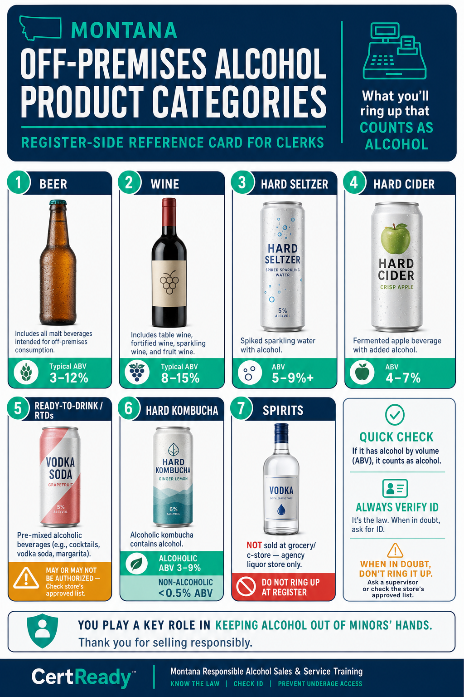
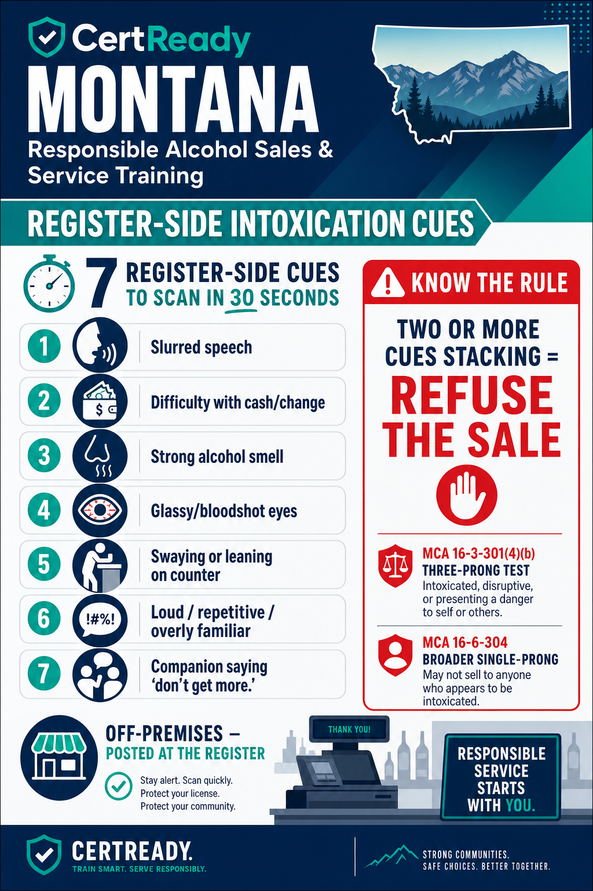
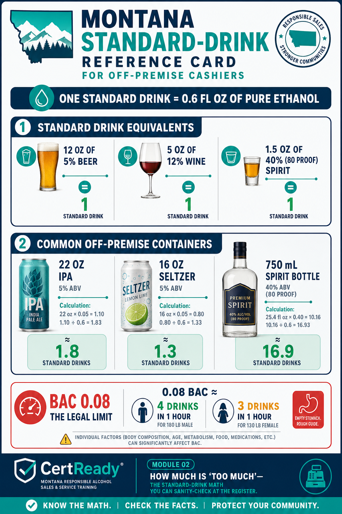

Alcohol Effects and Spotting Impaired Purchasers at the Register
How to recognize a customer who's already had too much when they walk up to buy more
What you'll learn
- K2: Effects of alcohol relevant to register-side detection
- K3: Standard drink + Montana >0.5% ABV definition
- K4: Montana's two parallel statutory standards for refusing an off-premise alcohol sale: MCA 16-3-301(4)(b) (three-prong) and MCA 16-6-304 (broader single-prong)
Montana defines an alcoholic beverage as anything over 0.5% alcohol by volume (MCA 16-1-106(4)). At an off-premises register, that means every product on the alcohol shelves and several that look like soft drinks but aren't.
What you'll ring up that counts as alcohol
- Beer - domestic, craft, imports, anything in the cooler aisle
- Wine - bottled, boxed, single-serve cans (yes, the canned wine still counts)
- Hard seltzer - ABV typically 5%, some lines 9%+
- Hard cider - usually 4–7% ABV
- Ready-to-drink products / RTDs - these may be alcohol products, but some are spirits-based and may not be authorized for every off-premises retailer. Ring only products your store is licensed and approved to sell.
- Hard kombucha - at 3–9% ABV, the alcoholic version is on the alcohol side; the under-0.5% version is not. Read the label.
- Spirits - only available at agency liquor stores. If you're at a grocery or c-store, you do NOT sell spirits

The 0.5% line in practice. Anything you scan that has "alcohol by volume" on the label, with a number above 0.5%, triggers the rules in this course: ID check, sale-to-intoxicated rule, hours, sealed-container rules. "Non-alcoholic beer" at 0.4% does not. Read the label if you're not sure.
- Montana uses TWO parallel statutory tests for refusing an alcohol sale, and both apply at the register. • MCA 16-3-301(4)(b)
- the three-prong test. It is unlawful to sell alcoholic beverages to a person who is 'actually, apparently, or obviously intoxicated.' • MCA 16-6-304
- a separate, broader prohibition. It bars a person, including a licensee and a licensee's employees, from selling, serving, or giving an alcoholic beverage to a person who is 'apparently under the influence of alcohol' (a single-prong test). The two statutes work together: refuse if either standard is met. Both rules cover off-premise retail sales
- there is no carve-out for cashiers.
Both standards apply to off-premise retail sales, but the practical test at the register is the same as in a bar: what a reasonable cashier would conclude from what they see in the 30 seconds the customer is at your register. Under 16-3-301(4)(b) you refuse if the customer is actually impaired (even if subtly), apparently impaired to a reasonable observer, or obviously impaired in the loud-falling-down sense. Under 16-6-304 you refuse on the broader single-prong test - anyone apparently under the influence. If a customer in your line is slurring, swaying, or smells strongly of alcohol, you cannot sell them another six-pack under either statute.
Register-side cues - what to scan for in 30 seconds
- Slurred or thick speech when answering "card or cash?" or asking the price
- Difficulty pulling cash or counting change - fingers don't cooperate
- Strong smell of alcohol from across the counter, even before they speak
- Glassy or bloodshot eyes; trouble making eye contact
- Swaying, leaning on the counter, or grabbing the candy display for balance
- Loud, repetitive, or overly familiar behavior with you or other customers in line
- Customer is followed in by someone telling them "don't get more" - a passenger or family member trying to intervene is a strong tell

One sign isn't enough; a pattern is. A single cue could be allergies, exhaustion, or just how that person normally talks. The Montana 'apparent' standard - present in both MCA 16-3-301(4)(b) and MCA 16-6-304 - is met when two or more cues stack at the same time: slurring AND swaying, glassy eyes AND repetitive talk, smell-of-alcohol AND difficulty counting change. Watch for the cluster.
If you spot the cues, the script is short. **"I can't sell this to you tonight, sorry. The law's on me."** Don't debate. Don't justify.
Don't argue. If they push, call your manager. Document the refusal in the store's incident log.
Refusal scripts that work at the register
- "I can't sell this tonight, sorry. The law's on me, not on you."
- "I'm not able to ring this up tonight. Manager can talk to you if you'd like."
- "Tonight isn't going to work for the alcohol - coffee and the snack aisle are open."
- "I want to keep my license. I can ring up everything else, just not this."
"The law's on me." This phrase shifts the refusal away from you-versus-them. It's a legal floor, not a personal judgment. Most customers walk away. The ones who escalate are the ones for whom you call the manager - that's the manager's job, not yours.
Document every refusal. A short note in the store's incident log: • Date and time • Customer description (gender, age range, what they were buying) • Cues you observed (slurring, smell, etc.) • What you said and what they did next • Your initials If the customer leaves and gets in a crash, your incident-log entry is the store's first line of defense under the Montana sale-to-intoxicated rule.
Scenario 1: The 11 p.m. customer. A customer comes to your register at 11 p.m. with a 24-pack of Bud Light. He smells strongly of alcohol. He's slurring slightly when asking the price.
His friend in the line behind him says, "You don't need any more, man."
Scenario 2: "It's for my friend." Two customers walk in together. One looks fine. The other is swaying and silent, leaning on a chip rack.
The fine-looking one comes to the register with a 12-pack of beer and says, "It's for him - he's having a rough night," gesturing at the swaying friend.
The standard drink is a unit, not a beverage. US guidance defines one standard drink as 0.6 fl oz of pure ethanol, which works out to about 12 oz of 5% beer, 5 oz of 12% wine, or 1.5 oz of 40% (80 proof) spirits. The numbers matter at the register because customers buy in containers that are sometimes far more than one standard drink: a 22-oz craft IPA at 8% ABV is roughly 2.9 standard drinks; a 16-oz can of an 8.5% hard seltzer is roughly 2.3; a 750mL bottle of 40% spirits is about 17. A customer who already shows two or three intoxication cues and is buying multiples of any of those is buying for a context where the BAC is going to rise quickly. Montana's per-se DUI threshold under MCA 61-8-1002 is 0.08 for noncommercial drivers (0.04 commercial, 0.02 under-21). A 180-lb adult male drinking on an empty stomach reaches roughly 0.08 BAC after about four standard drinks in an hour; a 130-lb adult female reaches the same threshold after about three.
The math is not exact - food, body composition, sleep, and medication change it - but the cashier's job is not to calculate the precise BAC. The cashier's job is to refuse when the apparent intoxication cues stack, before the customer leaves the store with the next round.

Why an off-prem cashier should care about the BAC math. Off-prem retail doesn't have a server bringing the next drink - the customer takes it home. That means a single off-prem sale to an already-impaired customer can fuel hours of additional drinking with no professional check-in in between. The Montana 'apparent intoxication' standard at MCA 16-6-304 applies the same way at a convenience-store register as it does at a bar pour: a single visible cue may not be enough, but a cluster (smell + slurring + difficulty counting cash) meets the standard.
The cashier who refuses at this point is preventing the BAC trajectory the math above describes - and is also the last person who could have prevented it.
Why a cashier needs this (MCA 16-4-1006(1)(a)). You won't measure anyone's BAC at the register - but Montana law still bars selling to a person who is actually, apparently, or obviously intoxicated (MCA 16-3-301(4)(b)). Knowing how alcohol shows up in behavior is how you make that call in a few seconds.
Visible signs to read at the counter
- Speech - slurred, mumbled, overly loud, or repeating themselves.
- Eyes - glassy, unfocused, or bloodshot.
- Balance and coordination - swaying, leaning on the counter, dropping items or fumbling a card/cash.
- Behavior - confusion about what they want, can't track simple questions, agitation, or smelling strongly of alcohol.
- The rule of thumb: any clear cluster of these signs = apparently intoxicated = refuse the alcohol sale.
Why 'they only bought a little' isn't the test. One standard drink (12 oz of 5% beer, 5 oz of 12% wine, or 1.5 oz of 80-proof spirits) affects a small person on an empty stomach far more than a large person who just ate. You can't do that math for a stranger at the register - which is exactly why Montana ties the rule to what's *observable*. Judge the person in front of you by visible signs, not by what or how much they're buying.
Demonstration check. A customer sets down a bottle of wine. His speech is slurred, his eyes are glassy, and he leans on the counter to steady himself.
Module 2 Quiz
Reviewer view shows the questions and correct answers immediately so you can evaluate the assessment content without submitting attempts.
What makes a beverage 'alcoholic' under Montana law?
Which standard does Montana use at the point of sale?
Which is NOT a register-side cue of intoxication?
If a customer at your register seems intoxicated but says they're 'fine,' you can sell them alcohol.
A sober customer tells you the alcohol they're buying is for their obviously-intoxicated friend. What's the right call?
Write a one-line refusal script you would use on an apparent-intoxicated customer at the register.